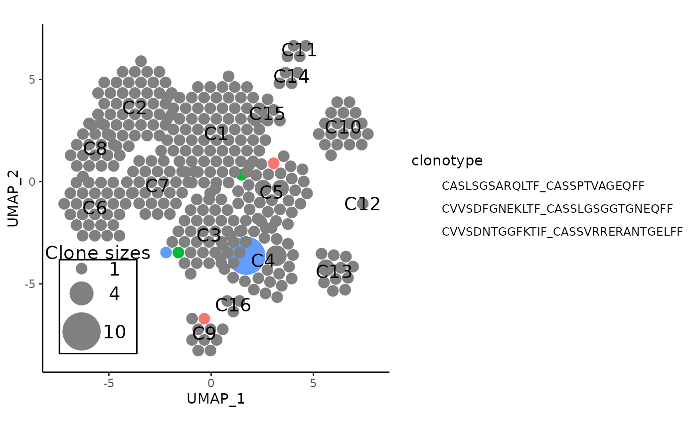

Clonal Analysis Utilities in APackOfTheClones
Source:vignettes/APackOfTheClones-utils.Rmd
APackOfTheClones-utils.RmdIntroduction
Here is a small collection of potentially useful functions to modify clonal expansion plots and work with clonal data that may be relevant.
Seperately Modifying the Clone Size Legend
The removeLegend and overlayLegend
functions both takes in an existing APackOfTheClones plot to either
remove or change its position/aesthetics on the plot by directly
modifying the ggplot object.
Getting Clone Sizes as a List
scRepertoire counts and store the clone sizes in a
column of the seurat object metadata. The countCloneSizes
function returns this information in a list where each element is a
table object corresponding to the clonotype frequencies for that
cluster, and a cluster with no clonotypes will have an empty table at
its index. Alternatively, it can also get the aggregate clone sizes. It
also allows for the same filtering arguments as seen in
RunAPOTC() and vizAPOTC().
Getting Clonotypes Common Across Seurat Clusters
The getSharedClones is a convenience function does this
with the subsetting arguments, and returns the shared clonotypes as a
named list where the names are the clonotypes and the elements are
numeric vectors where each number is one of the clusters that the
clonotype name at its index correspond to. A combined seurat object is
loaded with the variable name pbmc::
getSharedClones(pbmc, clonecall = "aa")
#> $CASLSGSARQLTF_CASSPTVAGEQFF
#> [1] 5 9
#>
#> $CVVSDFGNEKLTF_CASSLGSGGTGNEQFF
#> [1] 3 5
#>
#> $CVVSDNTGGFKTIF_CASSVRRERANTGELFF
#> [1] 3 4
#>
#> $`CAVGEKGYGGSQGNLIF_CASSFRPPGSPLHF;CASHGARGDGFCEKLFF`
#> [1] 3 5
#>
#> $CARKVRDSSYKLIF_CASSDSGYNEQFF
#> [1] 3 5
#>
#> $CASLSGSARQLTF_CASSSTVAGEQYF
#> [1] 4 5
#>
#> $CAVTFHYNTDKLIF_CASSQDRTGLDYEQYF
#> [1] 4 9
#>
#> $CALSGSRDDKIIF_NA
#> [1] 3 13
#>
#> $CAELNQAGTALIF_CASSQAPFSTSGELFF
#> [1] 3 5 9Getting Geometric Centroids For Seurat Reductions
The getReductionCentroids function is a shortcut for
getting the centroids as a list of numeric vectors of length 2 based on
some existing reduction in a seurat object.
head(getReductionCentroids(pbmc, "umap"))
#> [[1]]
#> [1] -0.5520761 1.5759817
#>
#> [[2]]
#> [1] -3.574884 3.540254
#>
#> [[3]]
#> [1] 0.01797853 -2.58801380
#>
#> [[4]]
#> [1] 2.286141 -3.725952
#>
#> [[5]]
#> [1] 2.8382880 -0.4037927
#>
#> [[6]]
#> [1] -4.0363226 -0.4305999Highlighting Specific Clonotypes
The scRepertoire package has a function
scRepertoire::highlightClones that highlights specific
points in the dimensional reduction plot that correspond to user
clonotype inputs and darkening everything else.
showCloneHighlight is the APackOfTheClones equivalent that
does so for each clonotype circle:
showCloneHighlight(
apotc_ggplot,
clonotype,
color_each = TRUE,
default_color = "#808080",
scale_bg = 1,
fill_legend = TRUE
)The function takes in a plot apotc_ggplot generated by
APOTCPlot()/vizAPOTC() and modifies its
underlying ggplot data to highlight/dim clones in
clonotype. Read the function level docs for more
information on how to customize the coloring of highlights with
color_each and default_color.
A potentially useful application is to inspect the shared clonotypes:
# create the APackOfTheClones plot
apotc_plot <- pbmc %>%
vizAPOTC(clonecall = "aa", show_labels = TRUE, verbose = FALSE)
# get the shared clonotypes
shared_clonotypes <- pbmc %>%
getSharedClones(clonecall = "aa") %>%
names()
# highlight the first 3 shared clones
apotc_plot %>%
showCloneHighlight(shared_clonotypes[1:3])